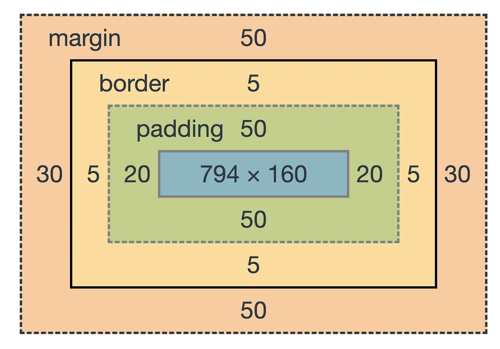

The CSS Box Model is a foundational layout concept in web design, defining how elements are rendered and spaced on a page. Every HTML element is treated as a rectangular box with four key layers: content, padding, border, and margin. These layers control the element’s space and how it interacts with adjacent elements.

Each part of the box model affects the overall appearance and layout of an element. Here's a breakdown of each component:
Each layer contributes to the total size and placement of the element on the page.
The width and height properties determine the dimensions of the content area of an element. Padding, border, and margin values are added to this defined size, making the final element size potentially larger than specified by width and height alone.
Example in CSS:
.example-box {
width: 300px;
height: 200px;
}
In this example, the content area of .example-box will be 300px wide and 200px tall.
The box-sizing property changes how the width and height of an element are calculated. By default, padding and borders add to the specified width and height, increasing the total box size.
Using box-sizing: border-box; includes padding and border within the specified width and height, ensuring a more predictable layout:
.example-box {
box-sizing: border-box;
}
This approach helps simplify layout adjustments and aligns the box model to the specified dimensions, avoiding unexpected size changes.
When two vertical margins come into contact, they "collapse" into a single margin with the larger value, instead of stacking. This effect only applies to vertical margins, not horizontal ones, and can impact layout consistency if not accounted for.
The overflow property manages how content that exceeds an element’s bounds is displayed. Options include:
Example:
.card {
overflow: hidden;
}
The display property defines how an element interacts with the box model and its surrounding elements:
The outline property adds an outline around an element, without affecting the box model. This is often used for focus indicators or visual emphasis without altering layout dimensions.
Example:
.example-box {
outline: 2px solid red;
}
Padding creates internal space within an element, moving the content away from its border. Padding values can be set with 1 to 4 values, affecting each side:
.example-box {
padding: 10px 20px 30px 40px;
}
The border property styles the edge of an element, and border-radius can round its corners. Borders can have widths, styles (solid, dashed, dotted), and colors.
Example:
.example-box {
border: 5px solid brown;
border-radius: 20px;
}
Margins provide spacing outside the element, separating it from others. Similar to padding, you can set 1 to 4 values:
.example-box {
margin: 10px 20px 10px 20px;
}
Using pseudo-classes like :hover with properties such as transform creates interactive effects when users hover over elements.
.card:hover {
color: rgb(147, 145, 37);
background-color: pink;
transform: scale(1.2);
}